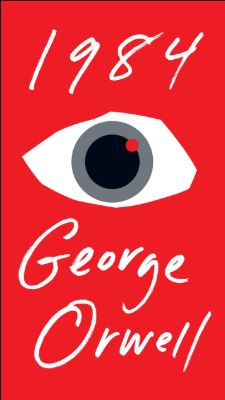
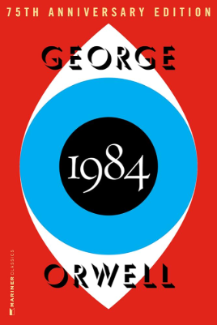

Today I read few pages of the book "1984" by George Orwell and got to know about his writing. he shows depictions Of how the world would look if it was ruled by totalitarian regimes, and shows the horror of totalitarian power and serves as a warning and awareness. He also wrote a similar book called Animal Farm, which won a prize in 2011.

The book follows the main character, Winston Smith, living a boring life under the restrictions of a totalitarian ruler nicknamed Big Brother. He works in a false history where citizens are believed to be living in a reality which does not exist. Thematically, it centres on totalitarianism, mass surveillance and repressive regimentation of people and behaviours. Nineteen Eighty-Four has been often regarded as a classic and has been acknowledged for its impact on twentieth-century literature.